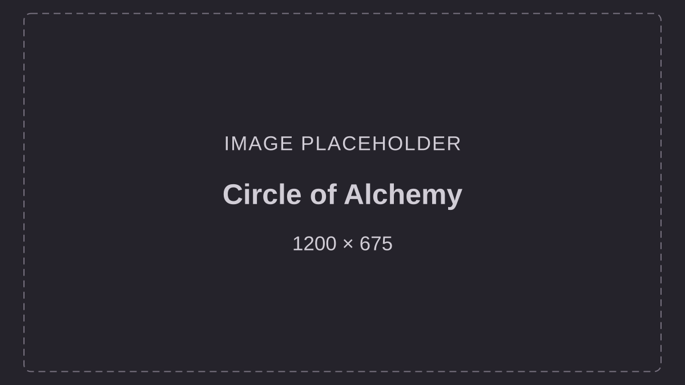

Mira
Product discoveryExperiment designPrototypingPrioritization
Product & innovation
Transform hypotheses into tested creations.
Concept blueprint
THE MANDATE
Alchemy is a metaphor for transformation through experimentation.
Its workers specialize in product & innovation. Each Quest should have a clear scope, an accountable worker, and an observable deliverable.
MEET THE DELVERS
SKILL LIBRARY
QUEST EXAMPLES
COLLABORATION
Engineering & technology
Build reliable technology from ideas.
ExploreCreative & media
Give ideas a tangible visual and narrative form.
ExploreBusiness & finance
Connect creation with sustainable business value.
ExploreCircle membership describes intended responsibility, not automatic tool access or decision authority.